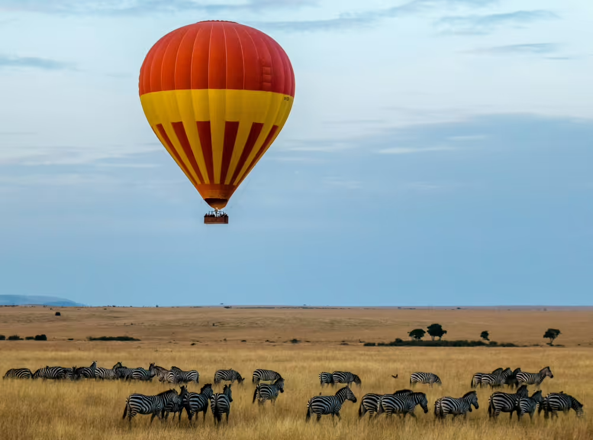
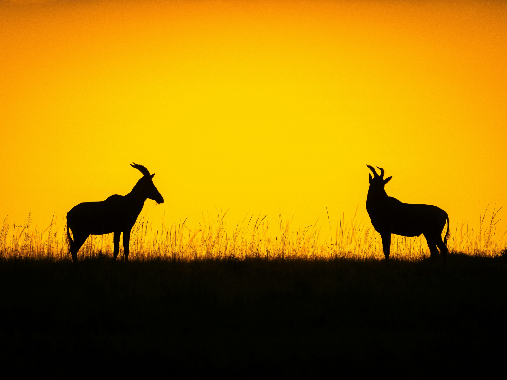
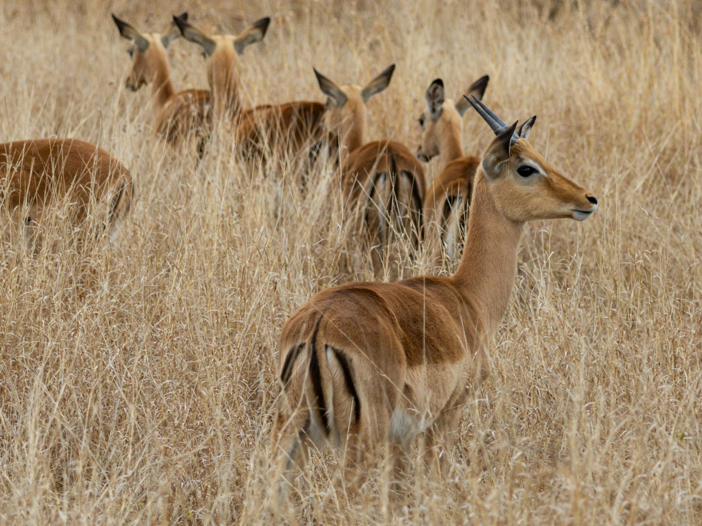
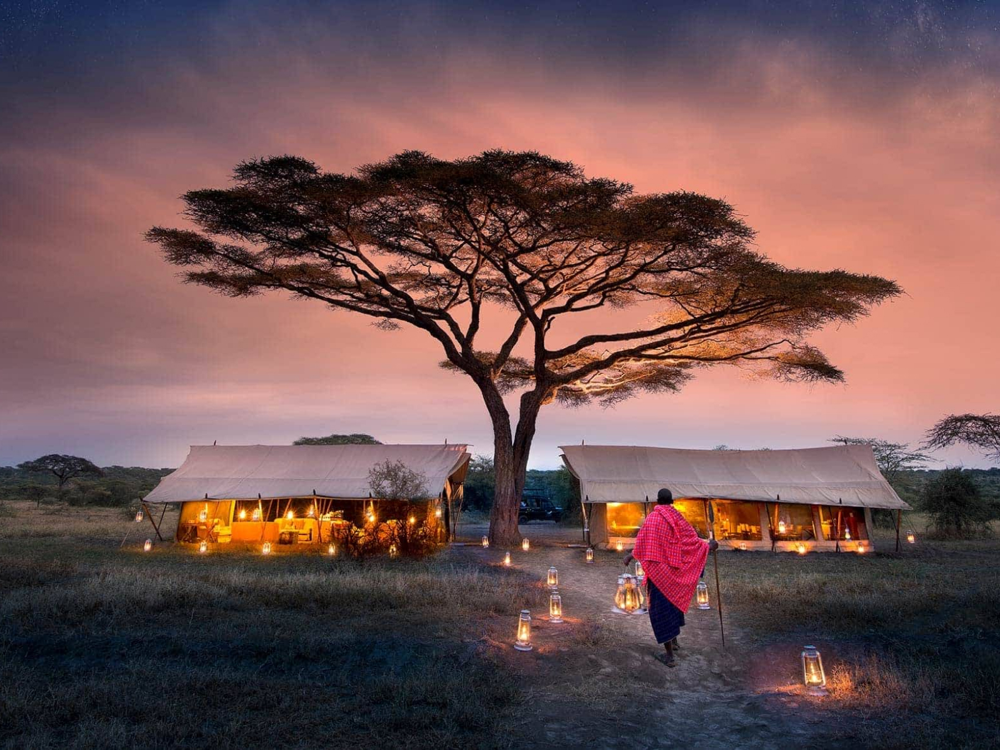

The best Safaris to
remember for a lifetime
October 27, 2024 6MI READ

1. Masai Mara, Kenya — The Home of the “Big Five”

The Masai Mara in Kenya is one of the most famous safari destinations in the world. Here, you can observe the "Big Five"—lions, leopards, elephants, rhinoceroses, and buffaloes—in their natural habitat. Particularly spectacular is the annual Wildebeest Migration, where hundreds of thousands of wildebeests and zebras cross the Mara River.
Recommended Hotels & Resorts
- Angama Mara: This luxurious lodge offers breathtaking views of the Masai Mara and top-notch safari tours.
- Mara Serena Safari Lodge: Nestled in the reserve, this hotel is perfect for experiencing wildlife right at your doorstep.
- Sarova Mara Game Camp: A luxurious tented camp with comfortable accommodations and guided game drives.
Activities
- Game drives at sunrise and sunset.
- Hot air balloon rides over the Masai Mara for a spectacular aerial view.
- Visit a traditional Maasai village to learn more about Maasai culture.
BOOK YOUR SAFARI IN MASAI MARA HERE: CHECK24 - KENYA HOTELS
2. Kruger National Park, South Africa — One of the Oldest and Best Safari Destinations

The Kruger National Park is one of the most renowned national parks in the world, offering spectacular safari experiences. With a vast array of wildlife, including the "Big Five," crocodiles, giraffes, and wild dogs, this park is a must-visit for any safari enthusiast.
Recommended Hotels & Resorts
- Sabi Sabi Earth Lodge: One of the most luxurious lodges in the private Sabi Sands Game Reserve, which borders the Kruger National Park.
- Singita Lebombo Lodge: This lodge offers modern elegance and stunning views of the N’wanetsi River.
- Guided bush walks with experienced rangers.
Activities
- Guided game drives in open 4x4 vehicles.
- Night drives to spot nocturnal animals like leopards and hyenas.
- Visit a traditional Maasai village to learn more about Maasai culture.
BOOK YOUR SAFARI IN KRUGER NATIONAL PARK HERE: CHECK24 - SOUTH AFRICA HOTELS
3. Serengeti, Tanzania — The Famous “Endless Plain”

The Serengeti in Tanzania is world-renowned for its vast, open plains and spectacular wildlife. Here, you can witness the impressive Great Migration, where over 1.5 million wildebeests and hundreds of thousands of zebras and gazelles migrate from the Serengeti to the Masai Mara.
Recommended Hotels & Resorts
- Four Seasons Safari Lodge Serengeti: Luxurious suites with direct views of wildlife and an infinity pool overlooking a waterhole.
- Serengeti Serena Safari Lodge: A lodge built in traditional Maasai style, offering excellent game drives and birdwatching opportunities.
- Sayari Camp: An exclusive camp located in the northern Serengeti area, perfect for observing river crossings during the migration.
Activities
- Day and night safaris in open jeeps.
- Hot air balloon rides over the vast plains of the Serengeti.
- Visit to Olduvai Gorge, one of the most important prehistoric sites in human history.
BOOK YOUR SAFARI IN THE SERENGETI HERE: CHECK24 - TANZANIA HOTELS